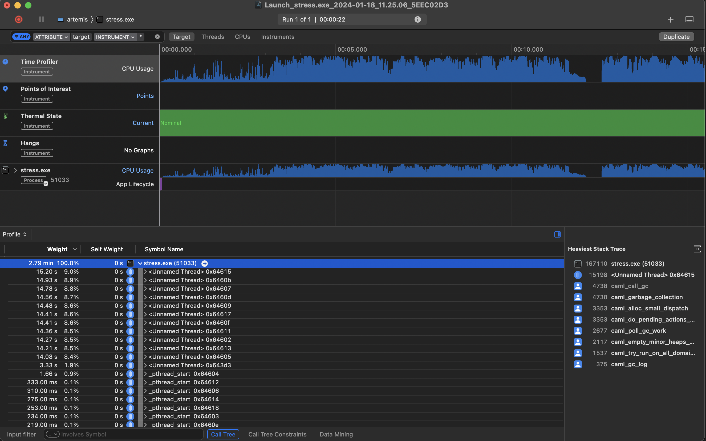
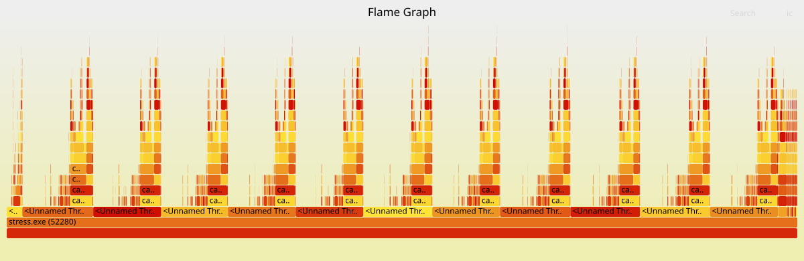

Preface
The premise of this collection of notes is to gather information about OCaml Debugging and Performance, and provide a single source of information about OCaml Performance and tooling, native OCaml debugging and related topics.
This work is inherently practical in nature, if you have a working knowledge of OCaml and systems performance tools then it should be possible to follow along.
Part I: Preliminaries
This section covers the foundational concepts needed before diving into performance work with OCaml. You'll learn about OCaml's compilation model, the philosophy behind effective performance optimization, and how to configure your build system for optimal results.
How to Use This Book
Who This Book Is For
What Makes OCaml Fast (and When It Isn't)
The Compilation Model: Bytecode vs Native
The OCaml Memory Model and GC
Strict Evaluation: Predictable Performance
When OCaml Surprises You
The Observability Stack for OCaml
Layered Approach: Hardware, OS, Runtime, Application
Tools at Each Layer
Measure First, Optimize Second
The USE Method for OCaml
Utilization, Saturation, and Errors
Applying USE to OCaml Resources (CPU, Memory, GC, Domains)
The Performance Triage Process
Is It CPU-Bound or Memory-Bound?
Is It GC-Bound?
Is It Algorithmic or Mechanical?
Quick Wins vs Deep Optimization
Setting Up Reproducible Benchmarks
Controlling for System Variability
Warming Up the Cache
Statistical Significance in Measurements
The Performance Checklist
Native vs Bytecode Compilation
Optimization Flags (-O2, -O3)
Flambda Enabled?
Debug Symbols and Their Cost
Release Build Configuration in Dune
Dune Profiles and Optimization Flags
Default Flags and What They Do
Setting Up Release Profiles
Common Pitfalls
The OCaml Compiler Optimization Levels
-O2 vs -O3 Behavior
-unsafe and Its Implications
-noassert for Production
-inline and Inlining Thresholds
Flambda: The Optimizing Backend
When to Use Flambda
Flambda-Specific Flags
Trade-offs: Compile Time vs Runtime Performance
Flambda 2 and Future Directions
Native Code vs Bytecode
When Bytecode Makes Sense
Performance Characteristics of Each
Part II: Measurement, Profiling, and Observation
This section covers the tools and techniques for understanding where your OCaml program spends its time and memory. Before optimizing anything, you need to measure it.
The Observability Landscape
Static Tools vs Dynamic Tracing
Counters, Profiling, and Tracing
Trade-offs: Overhead vs Detail
Tool Categories for OCaml
Hardware Counters (perf stat, CPU PMCs)
OS-Level Tools (top, vmstat, iostat)
Runtime Observability (GC Stats, Runtime Counters)
Application Profiling (Sampling Profilers)
Dynamic Tracing (USDT, eBPF, DTrace)
Choosing the Right Tool
Decision Tree for Common Problems
Platform-Specific Considerations
Linux Profiling Ecosystem
macOS Profiling (Instruments, DTrace)
Cross-Platform Tools
Profiling
This is an attempt to map the software profiling ecosystem, with a focus on the OCaml programming language. A review / survey of profilers, their data formats, analysis UIs and converters between data formats.

Profilers
There are a number of different profilers available for OCaml, each with their strengths and usecases.
| Profiler | Purpose | Profile Data Format | Link |
|---|---|---|---|
| olly | observability tools around the runtime events tracing system introduced in OCaml 5.0 | Chrome Tracing Format (JSON), Fuchsia Trace Format | runtime-events-tool |
| magic-trace | collects and displays high-resolution traces of what a process is doing | Fuchsia Trace Format | magic-trace |
| memtrace | Statistical Memory Profiling for OCaml aka statmemprof | Common Trace Format (CTF) | memtrace |
| eio-trace | eio-trace can be used to record and display traces of programs using the eio library | Fuchsia Trace Format | eio-trace |
| perf | General-purpose profiler that uses hardware performance counters on Linux | Common Trace Format (CTF) | |
| Instruments | General-purpose profiler that comes with Xcode on macOS | ||
| dtrace | General Performance analysis tool for FreeBSD, Solaris and MacOS | dtrace | |
| eBPF | General Performance analysis tool for Linux (similar to DTrace) |
The intent is to have a minimal set of Profile Data Formats produced by OCaml tooling that can be used with existing Analysis UI tools.
Visualisation and Analysis UI
| Name | Description | Profile Data Format | Link |
|---|---|---|---|
| Perfetto | System profiling, app tracing and trace analysis | Fuchsia Trace Format (others) | perfetto.dev |
| Speedscope | An interactive flamegraph visualizer | Various | github.com/jlfwong/speedscope |
| memtrace_viewer | Statistical Memory Profiler | CTF | github.com/janestreet/memtrace_viewer |
| flamegraph | Stack trace visualiser | Folded Stacks | www.brendangregg.com/flamegraphs.html |
| flamescope | Visualization tool for exploring different time ranges as Flame Graphs | Linux perf script | github.com/Netflix/flamescope |
| pprof | Visualise profiling data as directed graph or flamegraphs | Protocol Buffers | github.com/google/pprof |
Profile Data Format
Chrome Tracing Format is a textual JSON also know as Trace Event Format or Chrome Performance Profile. spec No OCaml libraries for reading / writing
Fuchsia Trace Format is a binary format used to collect, store, and transmit trace records. Focuses on performance. spec Two libraries for reading / writing trace-fuchsia and tracing.
Common Trace Format is a binary trace format designed to be very fast to write. Uses a declaritive language called the Trace Stream Description Language TSDL to describe trace stream layout. spec No OCaml libraries for reading / writing.
Pprof is a common stacktrace profile format using protocol buffers. Used by pprof supported as an input format by Speedscope and commercial monitoring tools (Google Cloud Profiler, Polar Signals, Datadog).
Converters
Nothing to see here!
Walk throughs
- OCaml 5 Performance part 1/part 2 comprehensive investigation of OCaml 5 performance for an application.
- Generating CPU Flamegraphs for OCaml on Linux here
- Generating CPU Flamegraphs for OCaml on MacOS here
- Memory profiling with statmemprof in 4.14 LTS and 5.3
Resources
This format was inspired by https://profilerpedia.markhansen.co.nz
Prior art:
-
OCaml-bench profiling notes https://github.com/ocaml-bench/notes/blob/master/profiling_notes.md
-
Add Profile-Guided Optimization (PGO) support to the compiler - https://github.com/ocaml/ocaml/issues/12200 [runtime-events-tools]: https://github.com/tarides/runtime_events_tools [magic-trace]: https://github.com/janestreet/magic-trace [memtrace]: https://github.com/janestreet/memtrace [dtrace]: https://dtrace.org/ [eio]: https://github.com/ocaml-multicore/eio [eio-trace]: https://github.com/ocaml-multicore/eio-trace [perfetto.dev]: https://ui.perfetto.dev/ [github.com/jlfwong/speedscope]: https://github.com/jlfwong/speedscope [github.com/janestreet/memtrace_viewer]: https://github.com/janestreet/memtrace_viewer [www.brendangregg.com/flamegraphs.html]: https://www.brendangregg.com/flamegraphs.html [github.com/Netflix/flamescope]: https://github.com/Netflix/flamescope [github.com/google/pprof]: https://github.com/google/pprof/blob/main/doc/README.md
Execution Profiling
Execution Profiling involves identifying which parts of a program are "hot" (executing frequently enough to impact runtime), causing expensive operations or simply causing "interesting" behaviour (like TLB misses or swapping off-cpu). Identifying this is best done using a profiler.
Profilers
There are many common profilers that work with OCaml, here we will focus on the following:
- perf is a general-purpose profiler for Linux that uses hardware performance counters. Many visualisation tools like Hotspot and Firefox Profiler take perf output.
- Instruments is a general purpose profiler provided with XCode on macOS. It uses Dtrace technology that is built into macOS and provides custom scripting of probes.
- pmcstat is a performance measurement tool for FreeBSD that uses hardware performance counters, similar to "perf".
- dtrace
- samply is a sampling profiler that produces profiles that can be viewed in the Firefox Profiler. It works on Mac, Linux, and Windows.
- flamegraph is a Cargo command that uses perf/DTrace to profile your code and then displays the results in a flame graph. It works on Linux and all platforms that support DTrace (macOS, FreeBSD, and possibly Illumos).
Debug Info
To profile a release build you should enable debug information. To do this, add "-g" to your flags in dune:
(env
(dev TODO What is the difference between flags and ocamlopt_flags?
(flags (:standard -g))
(ocamlopt_flags (:standard -g)))
(release
(ocamlopt_flags (:standard -g))))
where dev and release correspond to build profiles. Alternatively add "-g" to the ocamlopt native compiler.
TODO How can we force "-g" for all packages in an opam switch including the OCaml compiler itself?
At the time of writing this will include Call Frame Information (CFI) suitable for unwinding the call stack and source line debug information (identifying how symbols in a binary map back to source code). Ensure that no build tools call strip on the output binaries, this will remove debug information.
Frame Pointers
Profiling OCaml with perf
- perf support for DWARF vs FP vs LBR
- Importance of DWARF for performance tools like perf
Take content from ocaml/ocaml#12563, ocaml/ocaml#11144 and ocaml/ocaml#11031
LBR descriptions https://lwn.net/Articles/680985/ and https://lwn.net/Articles/680996/.
perf is the official Linux profiler. It is a large tool that covers many areas of profiling, tracing and scripting. Here we will only cover the intersection between OCaml and perf, and will leave further discussion to other books like [Systems Performance by Brendan Gregg] which will do a more thorough job of it.
Profiling with Instruments
Profiling with
OCaml Flamegraphs
Generating OCaml flamegraphs on Linux
Generating OCaml flamegraphs on MacOS
Flame Graphs are a visualisation for sampled stack frames. They provide a great way to visualise stack traces of profiled software to identify the most frequent code paths and optimise them. Popularised by Brendan Gregg loads more information can be found on his blog https://www.brendangregg.com/flamegraphs.html
Here, we are interested in how we can generate Flame Graphs for OCaml programs on macOS. I use macOS for development work, and I could not find other documentation on how to do this. So here we are.
Getting Started
First, we need XCode and Instruments installed. Get them via the App Store by searching for XCode and installing it. Instruments.app is Apple's profiling tool for capturing and visualising traces, along with many other interesting things. It is built on top of the DTrace tracing framework from OpenSolaris, which was ported to Mac OS X v10.5 and is available in all following versions of macOS. Dtrace is very cool and deserves its own post on how to use it effectively on OCaml programs.
After XCode is installed confirm that Instruments is also installed, this command will find the xctrace executable:
$ xcrun --find xctrace
/Applications/Xcode.app/Contents/Developer/usr/bin/xctrace
xctrace is a command line version of Instruments which allows capturing traces from a terminal. To run a Time Profiler against an OCaml process use the following command, substituing PROGRAM with the OCaml executable. Often found under _build/default directory of a Dune project. For my project the executable is called./_build/default/stress/stress.exe
$ xctrace record --output . --template "Time Profiler" \
--target-stdout - --launch -- PROGRAM
This will create a trace file ending in .trace, open that trace file in Instruments, select the Time Profiler and select a Stack Thread in the lower left pane. Choose Select Edit > Deep Copy from the menu and paste the output into a file called ocaml-program.trace. On MacOS Sonoma using Instruments 15.2 it looks like:

Next download the Perl file https://github.com/brendangregg/FlameGraph/blob/master/stackcollapse-instruments.pl
to reduce the trace into a format that Flame Graphs can understand. You will need to make it executable with chmod +x stackcollapse-instruments.pl
./stackcollapse-instruments.pl ocaml-program.trace > ocaml-program.outfile
Then download the Flame Graph tool https://github.com/brendangregg/FlameGraph/blob/master/flamegraph.pl and
run that against the outfile created by stackcollapse-instruments. Again make it executable with chmod +x
./flamegraph.pl ocaml-program.outfile > ocaml-program.svg
This will produce an application level Flame Graph of the traced application stored in ocaml-program.svg.
Open that up in a Browser and click around to see where your OCaml program is spending it's time.
Another visualisation option is https://www.speedscope.app which can take the .trace file and produce a Flame Graph, without needing to run any scripts locally.
In Practice: Flame Graph for solver-service
Recently I have been looking at the performance of the solver-service which is used to perform opam solves for the OCaml Continuous Integration services run by Tarides. The code uses OCaml 5 with EIO and is expected to scale across multiple CPUs.
I used this xctrace command to run the stress test, setting some Garbage Collection parameters:
$ xctrace record --template "Time Profiler" \
--env=OCAMLRUNPARAM="M=352" --target-stdout \
- --launch -- ./_build/default/stress/stress.exe local \
--cache-dir=./cache --count=10
...
Solved warm-up requests in: 12.37s
Running another 10 solves...
10/10 complete
Solved 10 requests in 10.06s (1.01s/iter) (15.91 solves/s)
Target app exited, ending recording...
Recording completed. Saving output file...
Output file saved as: Launch_stress.exe_2024-01-18_11.45.55_042428AC.trace
$ open Launch_stress.exe_2024-01-18_11.45.55_042428AC.trace
# Export data into a file called `macos-solver-02.trace`
$ ./stackcollapse-instruments.pl macos-solver-02.trace > macos-solver-02.outfile
$ ./flamegraph.pl macos-solver-02.outfile > macos-solver-02.svg
Producing this Flame Graph for the service. Note this was running on a 12-core M3Pro MacBookPro, hence the 12 peaks relating to OCaml 5 using all available cores in this machine.

Next step is working out where time is being spend and where we can speed up things.
Using Instruments on macOS
Time-based Profiling with Landmarks
Instrumenting Code with Landmarks
Overhead Considerations
Introduction to Dynamic Tracing
The Observability Gap: Beyond Sampling
DTrace, SystemTap, and eBPF/bpftrace
Platform Availability (Linux, macOS, FreeBSD, illumos)
OCaml Runtime USDT Probes
Available Probes in the Runtime
GC Phase Probes (Minor/Major Collection Start/End)
STW Synchronization Tracking
Runtime Counter Probes
Building OCaml with USDT Support
Tracing GC Behavior in Production
Debugging Slow Domain Synchronization
Application-Level USDT with ocaml_usdt
Installation and Setup
Simple Probes for Hot Paths (probe1-probe6)
String Probes and Int+String Combinations
JSON Probes for Complex Types (Usdt_json)
Performance Characteristics (Overhead When Disabled vs Enabled)
Conditional Firing and Lazy Evaluation
Tracing Workflows
Listing Probes in a Binary
Basic Tracing with bpftrace
Basic Tracing with DTrace
Aggregating and Histogramming Probe Data
Correlating Runtime Probes with Application Probes
Building Custom Analysis Tools
Writing bpftrace Scripts for OCaml Analysis
Combining USDT with perf Events
Production Tracing Considerations
Understanding OCaml Memory Layout
The Minor Heap and Major Heap
Value Representation and Boxing
When Allocation Happens
Finding memory leaks with Memtrace
Finding memory leaks with Memtrace
Using memtrace and memtrace-viewer
Installation and Setup
Recording Traces
Analyzing Allocation Patterns
Finding Memory Leaks
Other Memory Tools
memthol for Visualization
memprof-limits for Allocation Limits
Peak Memory Evaluation Techniques
GC Statistics and Tuning
Interpreting Gc.stat()
GC Control Parameters
When to Tune vs When to Fix the Code
Combining Memory Profiling with USDT
Correlating Allocation Spikes with GC Probes
Tracing Major Collection Triggers
Debugging support in the OCaml compiler
This document explains the state of debugging tools support in the OCaml compiler. It gives an overview of GDB, LLDB, WinDbg/CDB, as well as infrastructure around OCaml compiler to debug OCaml code.
The material contains both current support and ideas for future areas to improve.
Preliminaries
Debuggers
According to wikipedia 1
A debugger or debugging tool is a computer program used to test and debug other programs (the "target" program).
Writing a debugger from scratch for a language requries considerable work, especially if you want to support various platforms like Linux, MacOS, and Windows. Existing debuggers like GDB and LLDB can be extended to support debugging a language like OCaml. This is the path OCaml has chosen for what I'll call native debugging, debugging exectuables compiled to object code via assembly and run on a CPU. OCaml also includes a debugger for the bytecode exectuables it also produces, more on that later.
DWARF
According to the DWARF standard website:
DWARF is a debugging information file format used by many compilers and debuggers to support source level debugging. It addresses the requirements of a number of procedural languages, such as C, C++, and Fortran, and is designed to be extensible to other languages. DWARF is architecture independent and applicable to any processor or operating system. It is widely used on Unix, Linux and other operating systems, as well as in stand-alone environments.
DWARF allows a compiler to describe how program source translates to assembly, using a data structure called Debugging Information Entry (DIE) which stores the information as "tags" to denote functions, variables etc., e.g., DW_TAG_variable, DW_TAG_pointer_type, DW_TAG_subprogram etc.
You can also invent your own tags and attributes.
DWARF reader is a program that consumes the DWARF format and creates debugger compatible output. This program may live in the compiler itself.
CFI
What is CFI? What is CFI vs DWARF? https://sourceware.org/binutils/docs/as/CFI-directives.html
CodeView/PDB
PDB (Program Database) is a file format created by Microsoft that contains debug information. PDBs can be consumed by debuggers such as WinDbg/CDB and other tools to display debug information. A PDB contains multiple streams that describe debug information about a specific binary such as types, symbols, and source files used to compile the given binary. CodeView is another format which defines the structure of symbol records and type records that appear within PDB streams.
Compact Unwinding Format
Apple introduced a new kind of unwinding info the “compact unwinding format” on Apple platforms like macOS and iOS. The Clang compiler on those platforms emits this format along with DWARF CFI. The format is described by the implementation in clang/llvm, with an independent description provided at https://faultlore.com/blah/compact-unwinding/ and https://github.com/mstange/macho-unwind-info So to generate good backtraces on Apple platforms, you need to be able to parse and interpret compact unwinding tables. Further details of how Apple uses STABS plus DWARF for debug info https://wiki.dwarfstd.org/Apple%27s_%22Lazy%22_DWARF_Scheme.md.
Supported debuggers
GDB
OCaml supports GBD on Linux for all OCaml supported platforms, it supports basic debugging like setting breakpoints, stepping, backtraces etc. A sample GDB/Linux session is shown here. Additionally there are GDB macros gdb-macros and Python macros gdb_ocamlrun.py that provide low-level debugging of OCaml programs and of the OCaml runtime itself (both native and byte-code).
OCaml parser extensions
To be able to show debug output, we need an expression parser. GDB expression parsers are written in [Bison], and could be written to accept a subset of OCaml expressions, including printing OCaml values knowing the boxed types used by OCaml. Read the Memory Representation of Values chapter of RealWorld OCaml for more details.
Future work:
- Restore DWARF CFI for POWER native code
- Port more GDB macros to Python
- Add a source language to GDB https://sourceware.org/gdb/wiki/Internals%20Adding-a-Source-Language-to-GDB
LLDB
LLDB is the default debugger on MacOS, shipped with XCode and generally works the best on that platform. It is also available on Linux and is the default debugger for FreeBSD.
A sample LLDB/Linux session is shown here.
- LLDB has a plugin architecture but that does not work for language support.
- At present GDB generally works better on Linux.
OCaml parser extensions
This expression parser is written in C++. It is a type of Recursive Descent parser.
Some initial work on OCaml LLDB support at https://github.com/ocaml-flambda/llvm-project
What is included here?
RR
rr is a lightweight tool for recording, replaying and debugging execution of applications (trees of processes and threads). Debugging extends GDB with very efficient reverse-execution, which in combination with standard features like hardware data watchpoints, makes debugging much more fun. OCaml supports RR on Linux for certain x86_64 and ARM64 platforms.
Future work:
- Validate RR on Linux/LLDB platform
- RR doesn't currently support Apple M3 chips see https://github.com/rr-debugger/rr/pull/3528
WinDbg/CDB
Microsoft provides Windows Debugging Tools such as the Windows Debugger (WinDbg) and the Console Debugger (CDB) which both support debugging programs that provide PDB information. These debuggers parse the debug info for a binary from the PDB, if available, to construct a visualization to serve up in the debugger. Currently the OCaml compiler does not produce PDB and future work is required to support debugging on Windows. Additionally OCaml on Windows provides three different ports, complicating the matter further.
DWARF and OCaml
DWARF is a widely-used format for representing debug information for consumption by debugging tools but also for runtime systems and profiling. DWARF information is typically embedded within an executable and provides a way to represent a variety of information:
- line information mapping instructions back to their location in the source
program. eg assembly instruction at address
xoriginated frommain.mlat line 13 - unwind information allowing call chains to be reconstructed from the
runtime state of the exectution stack. eg OCaml program is currently
running function
x, which was called fromyand so on. This is particularly interesting for multicore which introduced fibers and effects, and their runtime managed stack segments. - type information allowing debugging tools to reconstruct the structure
and identity of values from the runtime state of the program.
eg when an OCaml program is executing assembly instruction at address
xwhat is the OCaml value sitting in a register.
This information allows debuggers (eg gdb or lldb) and profiling tools to do what they do.
The OCaml compiler has included DWARF support for some time, with the large changes comming from OCaml 5 and the associated runtime changes the DWARF support needed to be restored and improved.
There are a number of potential user-cases for DWARF information:
- Use in native debugging tools like
gdbandlldb - Statisical profiling using tools like perf
- Computing call stacks for ThreadSanitizer, a data race detection tool
OCaml to DWARF DIE Mapping
Provide a small example of how OCaml gets mapped to DWARF DIEs
DW_TAG_base_type provide base type mappings that can be defined per language. Should OCaml be using this to output DWARF representations.
DW_TAG_variable describes a variable in the source language
https://dwarfstd.org/doc/Debugging%20using%20DWARF-2012.pdf
$
COMPILE_UNIT<header overall offset = 0x00000047>:
< 0><0x0000000b> DW_TAG_compile_unit
DW_AT_stmt_list 0x00000062
DW_AT_low_pc 0x0004b6a0
DW_AT_high_pc 0x0004b760
DW_AT_name fib.ml
DW_AT_comp_dir /home/tsmc/ocaml
DW_AT_producer GNU AS 2.41
DW_AT_language DW_LANG_Mips_Assembler
LOCAL_SYMBOLS:
< 1><0x0000002e> DW_TAG_subprogram
DW_AT_name camlFib__main_1_3_code
DW_AT_external yes(1)
DW_AT_type <0x00000073>
DW_AT_low_pc 0x0004b6f8
DW_AT_high_pc 0x0004b73c
< 1><0x00000045> DW_TAG_subprogram
DW_AT_name camlFib__fib_0_2_code
DW_AT_external yes(1)
DW_AT_type <0x00000073>
DW_AT_low_pc 0x0004b6a0
DW_AT_high_pc 0x0004b6f4
< 1><0x0000005c> DW_TAG_subprogram
DW_AT_name camlFib__entry
DW_AT_external yes(1)
DW_AT_type <0x00000073>
DW_AT_low_pc 0x0004b740
DW_AT_high_pc 0x0004b760
< 1><0x00000073> DW_TAG_unspecified_type
OCaml Name Mangling
What is missing?
- Integration with IDEs (Debug Adapter Protocol)
Resources
Tom Tromey discusses debugging support in rustc, provides a good overview of the area and what OCaml might also want to do - https://www.youtube.com/watch?v=elBxMRSNYr4
https://rustc-dev-guide.rust-lang.org/debugging-support-in-rustc.html
DWARF support in GHC (4 part series) https://well-typed.com/blog/2020/04/dwarf-1/
Sample GDB on Linux debugging session
Starting from an OCaml 4.14 switch, create one if it doesn't already exist with opam switch create 4.14.1 --no-install.
$ opam switch
# switch compiler description
4.14.1 ocaml-base-compiler.4.14.1 4.14.1
Consider this program:
$ cat fib.ml
let rec fib n =
if n < 2 then 1
else fib (n-1) + fib (n-2)
let main () =
let r = fib 20 in
Printf.printf "fib(20) = %d" r
let _ = main ()
compiled with
$ ocamlopt -g -o fib.exe fib.ml
Here the OCaml from our fib program gets name mangled into the following:
$ nm -pa fib.exe|grep "camlFib"
000000010005da58 D _camlFib
000000010005daf0 D _camlFib__1
000000010005dac8 D _camlFib__2
000000010005dab0 D _camlFib__3
000000010005da98 D _camlFib__4
000000010005da80 D _camlFib__5
000000010005da40 D _camlFib__6
000000010005da28 D _camlFib__7
0000000100003838 T _camlFib__code_begin
0000000100003928 T _camlFib__code_end
000000010005da20 D _camlFib__data_begin
000000010005db08 D _camlFib__data_end
00000001000038e8 T _camlFib__entry
0000000100003838 T _camlFib__fib_267
000000010005db10 D _camlFib__frametable
000000010005da68 D _camlFib__gc_roots
0000000100003890 T _camlFib__main_269
OCaml functions are mangled as caml<MODULENAME>__<FUNCTIONNAME>_<RANDOMINT>. The numbers used can be recovered from the lambda format. Re-running the command with -dlambda will output the lamdba form, and -S will output the assembly for the program as fib.S. You can see the symbol _camlFib__main_269 is coming from the main/269 seen in the lambda format.
$ ocamlopt -dlambda -g -S -o fib.exe fib.ml
(seq
(letrec
(fib/267
(function n/268[int] : int
(if (< n/268 2) 1
(+ (apply fib/267 (- n/268 1)) (apply fib/267 (- n/268 2))))))
(setfield_ptr(root-init) 0 (global Fib!) fib/267))
(let
(main/269 =
(function param/308[int] : int
(let (r/271 =[int] (apply (field 0 (global Fib!)) 20))
(apply (field 1 (global Stdlib__Printf!))
[0: [11: "fib(20) = " [4: 0 0 0 0]] "fib(20) = %d"] r/271))))
(setfield_ptr(root-init) 1 (global Fib!) main/269))
(apply (field 1 (global Fib!)) 0) 0 0)
$ gdb fib.exe
GNU gdb (Ubuntu 14.0.50.20230907-0ubuntu1) 14.0.50.20230907-git
Copyright (C) 2023 Free Software Foundation, Inc.
License GPLv3+: GNU GPL version 3 or later <http://gnu.org/licenses/gpl.html>
This is free software: you are free to change and redistribute it.
There is NO WARRANTY, to the extent permitted by law.
Type "show copying" and "show warranty" for details.
This GDB was configured as "aarch64-linux-gnu".
Type "show configuration" for configuration details.
For bug reporting instructions, please see:
<https://www.gnu.org/software/gdb/bugs/>.
Find the GDB manual and other documentation resources online at:
<http://www.gnu.org/software/gdb/documentation/>.
For help, type "help".
Type "apropos word" to search for commands related to "word"...
Reading symbols from fib.exe...
(gdb) break camlFib__fib_267
Breakpoint 1 at 0x4f9b8: file fib.ml, line 1.
(gdb) r
Starting program: /home/tsmc/ocaml/fib-4.14.1.exe
[Thread debugging using libthread_db enabled]
Using host libthread_db library "/lib/aarch64-linux-gnu/libthread_db.so.1".
Breakpoint 1, camlFib__fib_267 () at fib.ml:1
1 let rec fib n =
(gdb) bt
#0 camlFib__fib_267 () at fib.ml:1
#1 0x0000aaaaaaaefa2c in camlFib__main_269 () at fib.ml:6
#2 0x0000aaaaaaaefa98 in camlFib__entry () at fib.ml:9
#3 0x0000aaaaaaaec0a4 in caml_program ()
#4 0x0000aaaaaab337d4 in caml_start_program ()
#5 0x0000aaaaaab34090 in caml_startup_common (argv=0xaaaaaab709c8,
pooling=<optimized out>, pooling@entry=0) at startup_nat.c:160
#6 0x0000aaaaaab34110 in caml_startup_exn (argv=<optimized out>)
at startup_nat.c:167
#7 caml_startup (argv=<optimized out>) at startup_nat.c:172
#8 caml_main (argv=<optimized out>) at startup_nat.c:179
#9 0x0000aaaaaaaebdd0 in main (argc=<optimized out>, argv=<optimized out>)
at main.c:37
(gdb)
Observe that I have the full backtrace all the way from the main function in the runtime.
You can keep continuing and the backtrace continues to build up, showing the recursive calls to fib.
(gdb) c
Continuing.
Breakpoint 1, camlFib__fib_267 () at fib.ml:1
1 let rec fib n =
(gdb) bt
#0 camlFib__fib_267 () at fib.ml:1
#1 0x0000aaaaaaaef9e4 in camlFib__fib_267 () at fib.ml:3
#2 0x0000aaaaaaaefa2c in camlFib__main_269 () at fib.ml:6
#3 0x0000aaaaaaaefa98 in camlFib__entry () at fib.ml:9
#4 0x0000aaaaaaaec0a4 in caml_program ()
#5 0x0000aaaaaab337d4 in caml_start_program ()
#6 0x0000aaaaaab34090 in caml_startup_common (argv=0xaaaaaab709c8, pooling=<optimized out>, pooling@entry=0)
at startup_nat.c:160
#7 0x0000aaaaaab34110 in caml_startup_exn (argv=<optimized out>) at startup_nat.c:167
#8 caml_startup (argv=<optimized out>) at startup_nat.c:172
#9 caml_main (argv=<optimized out>) at startup_nat.c:179
#10 0x0000aaaaaaaebdd0 in main (argc=<optimized out>, argv=<optimized out>) at main.c:37
(gdb) c
Continuing.
Breakpoint 1, camlFib__fib_267 () at fib.ml:1
1 let rec fib n =
(gdb) bt
#0 camlFib__fib_267 () at fib.ml:1
#1 0x0000aaaaaaaef9e4 in camlFib__fib_267 () at fib.ml:3
#2 0x0000aaaaaaaef9e4 in camlFib__fib_267 () at fib.ml:3
#3 0x0000aaaaaaaefa2c in camlFib__main_269 () at fib.ml:6
#4 0x0000aaaaaaaefa98 in camlFib__entry () at fib.ml:9
#5 0x0000aaaaaaaec0a4 in caml_program ()
#6 0x0000aaaaaab337d4 in caml_start_program ()
#7 0x0000aaaaaab34090 in caml_startup_common (argv=0xaaaaaab709c8, pooling=<optimized out>, pooling@entry=0)
at startup_nat.c:160
#8 0x0000aaaaaab34110 in caml_startup_exn (argv=<optimized out>) at startup_nat.c:167
#9 caml_startup (argv=<optimized out>) at startup_nat.c:172
#10 caml_main (argv=<optimized out>) at startup_nat.c:179
#11 0x0000aaaaaaaebdd0 in main (argc=<optimized out>, argv=<optimized out>) at main.c:37
(gdb)
Here we are on Linux / ARM64, so while the values cannot be printed directly, I know that the arguments are sent in registers, for ARM64 the first 4 arguments are passed in registers x0-x3. I can examine the value at entry to the function like so:
(gdb) p $x0 >> 1
$1 = 16
(gdb)
right shifting by 1 due to OCaml value representation, which uses 31 bits for integer values.
(gdb) c
Continuing.
Breakpoint 1, camlFib__fib_267 () at fib.ml:1
(gdb) p $x0 >> 1
$3 = 14
You can also set break points based on the line numbers in gbd.
(gdb) list
1 let rec fib n =
2 if n < 2 then 1
3 else fib (n-1) + fib (n-2)
4
5 let main () =
6 let r = fib 20 in
7 Printf.printf "fib(20) = %d" r
8
9 let _ = main ()
(gdb) break fib.ml:6
Breakpoint 2 at 0xaaaaaaaefa28: file fib.ml, line 6.
From this point you can run the entire OCaml program, setting breakpoints and interacting with it as you would a regular C/C++ program.
Sample LLDB on MacOS session
Starting from an OCaml 4.14 switch, create one if it doesn't already exist with opam switch create 4.14.1 --no-install.
$ opam switch
# switch compiler description
4.14.1 ocaml-base-compiler.4.14.1 4.14.1
Consider this program:
$ cat fib.ml
let rec fib n =
if n < 2 then 1
else fib (n-1) + fib (n-2)
let main () =
let r = fib 20 in
Printf.printf "fib(20) = %d" r
let _ = main ()
compiled with
$ ocamlopt -g -o fib-4.14.1.exe fib.ml
Here the OCaml from our fib program gets name mangled into the following:
$ nm -pa fib-4.14.1.exe|grep "camlFib"
000000010005da58 D _camlFib
000000010005daf0 D _camlFib__1
000000010005dac8 D _camlFib__2
000000010005dab0 D _camlFib__3
000000010005da98 D _camlFib__4
000000010005da80 D _camlFib__5
000000010005da40 D _camlFib__6
000000010005da28 D _camlFib__7
0000000100003838 T _camlFib__code_begin
0000000100003928 T _camlFib__code_end
000000010005da20 D _camlFib__data_begin
000000010005db08 D _camlFib__data_end
00000001000038e8 T _camlFib__entry
0000000100003838 T _camlFib__fib_267
000000010005db10 D _camlFib__frametable
000000010005da68 D _camlFib__gc_roots
0000000100003890 T _camlFib__main_269
OCaml functions are mangled as caml<MODULENAME>__<FUNCTIONNAME>_<RANDOMINT>. The numbers used can be recovered from the lambda format. Re-running the command with -dlambda will output the lamdba form, and -S will output the assembly for the program as fib.S. You can see the symbol _camlFib__main_269 is coming from the main/269 seen in the lambda format.
$ ocamlopt -dlambda -g -S -o fib-4.14.1.exe fib.ml
(seq
(letrec
(fib/267
(function n/268[int] : int
(if (< n/268 2) 1
(+ (apply fib/267 (- n/268 1)) (apply fib/267 (- n/268 2))))))
(setfield_ptr(root-init) 0 (global Fib!) fib/267))
(let
(main/269 =
(function param/308[int] : int
(let (r/271 =[int] (apply (field 0 (global Fib!)) 20))
(apply (field 1 (global Stdlib__Printf!))
[0: [11: "fib(20) = " [4: 0 0 0 0]] "fib(20) = %d"] r/271))))
(setfield_ptr(root-init) 1 (global Fib!) main/269))
(apply (field 1 (global Fib!)) 0) 0 0)
$ lldb fib-4.14.1.exe
(lldb) target create "fib-4.14.1.exe"
Current executable set to '/Users/tsmc/projects/ocaml/fib-4.14.1.exe' (arm64).
(lldb) br s -n camlFib__fib_267
Breakpoint 1: where = fib-4.14.1.exe`camlFib__code_begin, address = 0x0000000100003838
(lldb) r
Process 63927 launched: '/Users/tsmc/projects/ocaml/fib-4.14.1.exe' (arm64)
Process 63927 stopped
* thread #1, queue = 'com.apple.main-thread', stop reason = breakpoint 1.1
frame #0: 0x0000000100003838 fib-4.14.1.exe`camlFib__code_begin
fib-4.14.1.exe`camlFib__code_begin:
-> 0x100003838 <+0>: sub sp, sp, #0x20
0x10000383c <+4>: str x30, [sp, #0x18]
0x100003840 <+8>: cmp x0, #0x5
0x100003844 <+12>: b.ge 0x100003858 ; <+32>
Target 0: (fib-4.14.1.exe) stopped.
(lldb) bt
* thread #1, queue = 'com.apple.main-thread', stop reason = breakpoint 1.1
* frame #0: 0x0000000100003838 fib-4.14.1.exe`camlFib__code_begin
frame #1: 0x00000001000038ac fib-4.14.1.exe`camlFib__code_begin + 116
frame #2: 0x0000000100029c44 fib-4.14.1.exe`caml_startup_common(argv=<unavailable>, pooling=<unavailable>) at startup_nat.c:160:9 [opt]
frame #3: 0x0000000100029cb8 fib-4.14.1.exe`caml_main [inlined] caml_startup_exn(argv=<unavailable>) at startup_nat.c:167:10 [opt]
frame #4: 0x0000000100029cb0 fib-4.14.1.exe`caml_main [inlined] caml_startup(argv=<unavailable>) at startup_nat.c:172:15 [opt]
frame #5: 0x0000000100029cb0 fib-4.14.1.exe`caml_main(argv=<unavailable>) at startup_nat.c:179:3 [opt]
frame #6: 0x0000000100029d18 fib-4.14.1.exe`main(argc=<unavailable>, argv=<unavailable>) at main.c:37:3 [opt]
frame #7: 0x000000018863d0e0 dyld`start + 2360
Observe that I have the full backtrace all the way from the main function in the runtime.
You can keep continuing and the backtrace continues to build up, showing the recursive calls to fib.
(lldb) bt
* thread #1, queue = 'com.apple.main-thread', stop reason = breakpoint 1.1
* frame #0: 0x0000000100003838 fib-4.14.1.exe`camlFib__code_begin
frame #1: 0x0000000100003864 fib-4.14.1.exe`camlFib__code_begin + 44
frame #2: 0x00000001000038ac fib-4.14.1.exe`camlFib__code_begin + 116
frame #3: 0x0000000100029c44 fib-4.14.1.exe`caml_startup_common(argv=<unavailable>, pooling=<unavailable>) at startup_nat.c:160:9 [opt]
frame #4: 0x0000000100029cb8 fib-4.14.1.exe`caml_main [inlined] caml_startup_exn(argv=<unavailable>) at startup_nat.c:167:10 [opt]
frame #5: 0x0000000100029cb0 fib-4.14.1.exe`caml_main [inlined] caml_startup(argv=<unavailable>) at startup_nat.c:172:15 [opt]
frame #6: 0x0000000100029cb0 fib-4.14.1.exe`caml_main(argv=<unavailable>) at startup_nat.c:179:3 [opt]
frame #7: 0x0000000100029d18 fib-4.14.1.exe`main(argc=<unavailable>, argv=<unavailable>) at main.c:37:3 [opt]
frame #8: 0x000000018863d0e0 dyld`start + 2360
(lldb) c
Process 63927 resuming
Process 63927 stopped
* thread #1, queue = 'com.apple.main-thread', stop reason = breakpoint 1.1
frame #0: 0x0000000100003838 fib-4.14.1.exe`camlFib__code_begin
fib-4.14.1.exe`camlFib__code_begin:
-> 0x100003838 <+0>: sub sp, sp, #0x20
0x10000383c <+4>: str x30, [sp, #0x18]
0x100003840 <+8>: cmp x0, #0x5
0x100003844 <+12>: b.ge 0x100003858 ; <+32>
Target 0: (fib-4.14.1.exe) stopped.
(lldb) bt
* thread #1, queue = 'com.apple.main-thread', stop reason = breakpoint 1.1
* frame #0: 0x0000000100003838 fib-4.14.1.exe`camlFib__code_begin
frame #1: 0x0000000100003864 fib-4.14.1.exe`camlFib__code_begin + 44
frame #2: 0x0000000100003864 fib-4.14.1.exe`camlFib__code_begin + 44
frame #3: 0x00000001000038ac fib-4.14.1.exe`camlFib__code_begin + 116
frame #4: 0x0000000100029c44 fib-4.14.1.exe`caml_startup_common(argv=<unavailable>, pooling=<unavailable>) at startup_nat.c:160:9 [opt]
frame #5: 0x0000000100029cb8 fib-4.14.1.exe`caml_main [inlined] caml_startup_exn(argv=<unavailable>) at startup_nat.c:167:10 [opt]
frame #6: 0x0000000100029cb0 fib-4.14.1.exe`caml_main [inlined] caml_startup(argv=<unavailable>) at startup_nat.c:172:15 [opt]
frame #7: 0x0000000100029cb0 fib-4.14.1.exe`caml_main(argv=<unavailable>) at startup_nat.c:179:3 [opt]
frame #8: 0x0000000100029d18 fib-4.14.1.exe`main(argc=<unavailable>, argv=<unavailable>) at main.c:37:3 [opt]
frame #9: 0x000000018863d0e0 dyld`start + 2360
(lldb)
Here we are on MacOS / ARM64, so while the values cannot be printed directly, I know that the arguments are sent in registers, for ARM64 the first 4 arguments are passed in registers x0-x3. I can examine the value at entry to the function like so:
(lldb) p $x0 >> 1
(unsigned long) 16
(lldb)
right shifting by 1 due to OCaml value representation, which uses 31 bits for integer values.
(lldb) c
Process 63927 resuming
Process 63927 stopped
* thread #1, queue = 'com.apple.main-thread', stop reason = breakpoint 1.1
frame #0: 0x0000000100003838 fib-4.14.1.exe`camlFib__code_begin
fib-4.14.1.exe`camlFib__code_begin:
-> 0x100003838 <+0>: sub sp, sp, #0x20
0x10000383c <+4>: str x30, [sp, #0x18]
0x100003840 <+8>: cmp x0, #0x5
0x100003844 <+12>: b.ge 0x100003858 ; <+32>
Target 0: (fib-4.14.1.exe) stopped.
(lldb) p $x0 >> 1
(unsigned long) 14
From this point you can run the entire OCaml program, setting breakpoints and interacting with it as you would a regular C/C++ program.
Issues
- Setting breakpoints using line numbers eg
br s -f fib.ml -l 6does not work in 4.14, 5.* or flambda2 (ARM64). - Setting breakpoints using symbols eg
br s -n camlFib__fib_267is broken in OCaml 5.1 onwards. OCaml 5.1 changed name mangling to use.separators over__which breaks lldb on MacOS. Linux LLDB is unaffected. - Backtraces in 4.14 onwards show offset
camlFib__code_begin + 116rather than line number in source code - Backtraces in 5.0 onwards missing C code for OCaml runtime setup, beginning at
camlFib__code_begin
Wed 6 Mar 14:48:12 2024
$ cat fib.ml
let rec fib n =
if n < 2 then 1
else fib (n-1) + fib (n-2)
let main () =
let r = fib 20 in
Printf.printf "fib(20) = %d" r
let _ = main ()
$ ocamlopt -g -o fib.exe fib.ml
$ dsymutil --symtab fib.exe |grep camlFib
----------------------------------------------------------------------
Symbol table for: 'fib.exe' (arm64)
----------------------------------------------------------------------
Index n_strx n_type n_sect n_desc n_value
======== -------- ------------------ ------ ------ ----------------
[ 0] 00013fc5 0e ( SECT ) 01 0000 0000000100035590 '_caml_array_gather'
....
[ 5471] 000057e7 0f ( SECT EXT) 09 0200 000000010006da60 '_camlFib'
[ 5472] 000057f0 0f ( SECT EXT) 09 0200 000000010006daf8 '_camlFib$1'
[ 5473] 000057fb 0f ( SECT EXT) 09 0200 000000010006dad0 '_camlFib$2'
[ 5474] 00005806 0f ( SECT EXT) 09 0200 000000010006dab8 '_camlFib$3'
[ 5475] 00005811 0f ( SECT EXT) 09 0200 000000010006daa0 '_camlFib$4'
[ 5476] 0000581c 0f ( SECT EXT) 09 0200 000000010006da88 '_camlFib$5'
[ 5477] 00005827 0f ( SECT EXT) 09 0200 000000010006da48 '_camlFib$6'
[ 5478] 00005832 0f ( SECT EXT) 09 0200 000000010006da30 '_camlFib$7'
[ 5479] 0000583d 0f ( SECT EXT) 01 0000 00000001000071f8 '_camlFib$code_begin'
[ 5480] 00005851 0f ( SECT EXT) 01 0200 0000000100007394 '_camlFib$code_end'
[ 5481] 00005863 0f ( SECT EXT) 09 0000 000000010006da28 '_camlFib$data_begin'
[ 5482] 00005877 0f ( SECT EXT) 09 0200 000000010006db10 '_camlFib$data_end'
[ 5483] 00005889 0f ( SECT EXT) 01 0200 0000000100007318 '_camlFib$entry'
[ 5484] 00005898 0f ( SECT EXT) 01 0200 0000000100007210 '_camlFib$fib_270'
[ 5485] 000058a9 0f ( SECT EXT) 09 0200 000000010006db18 '_camlFib$frametable'
[ 5486] 000058bd 0f ( SECT EXT) 09 0200 000000010006da70 '_camlFib$gc_roots'
[ 5487] 000058cf 0f ( SECT EXT) 01 0200 00000001000072a0 '_camlFib$main_272'
$ nm -pa fib.exe |grep camlFib
000000010006da60 D _camlFib
000000010006daf8 D _camlFib$1
000000010006dad0 D _camlFib$2
000000010006dab8 D _camlFib$3
000000010006daa0 D _camlFib$4
000000010006da88 D _camlFib$5
000000010006da48 D _camlFib$6
000000010006da30 D _camlFib$7
00000001000071f8 T _camlFib$code_begin
0000000100007394 T _camlFib$code_end
000000010006da28 D _camlFib$data_begin
000000010006db10 D _camlFib$data_end
0000000100007318 T _camlFib$entry
0000000100007210 T _camlFib$fib_270
000000010006db18 D _camlFib$frametable
000000010006da70 D _camlFib$gc_roots
00000001000072a0 T _camlFib$main_272
image lookup -r -n camlFib
5 matches found in /Users/tsmc/code/ocaml/ocaml/fib-5.3.0.exe:
Address: fib-5.3.0.exe[0x00000001000071f8] (fib-5.3.0.exe.__TEXT.__text + 11408)
Summary: fib-5.3.0.exe`camlFib$code_begin Address: fib-5.3.0.exe[0x0000000100007394] (fib-5.3.0.exe.__TEXT.__text + 11820)
Summary: fib-5.3.0.exe`camlFib$code_begin + 412 Address: fib-5.3.0.exe[0x0000000100007318] (fib-5.3.0.exe.__TEXT.__text + 11696)
Summary: fib-5.3.0.exe`camlFib$code_begin + 288 Address: fib-5.3.0.exe[0x0000000100007210] (fib-5.3.0.exe.__TEXT.__text + 11432)
Summary: fib-5.3.0.exe`camlFib$code_begin + 24 Address: fib-5.3.0.exe[0x00000001000072a0] (fib-5.3.0.exe.__TEXT.__text + 11576)
Summary: fib-5.3.0.exe`camlFib$code_begin + 168
Noticing that the OCaml executable has entries for OCaml compiler runtime but not the fib executable.
We need OSO debug information like the Rust example above.
See compile_unit_proto_die from flambda-backend repo that apparently emits the right SO/OSO combinations.
Need to validate this works. Off to build flambda-backend on MacOS.
Hacked assembly file to include .file fib.ml at the top of the file.
Using flambda we get these debug symbols:
(lldb) image lookup -r -n camlFib
5 matches found in /Users/tsmc/code/ocaml/flambda-backend/fib-jst.exe:
Address: fib-jst.exe[0x0000000100003518] (fib-jst.exe.__TEXT.__text + 10448)
Summary: fib-jst.exe`camlFib__code_begin Address: fib-jst.exe[0x00000001000035e0] (fib-jst.exe.__TEXT.__text + 10648)
Summary: fib-jst.exe`camlCamlinternalFormatBasics__code_begin Address: fib-jst.exe[0x00000001000035c0] (fib-jst.exe.__TEXT.__text + 10616)
Summary: fib-jst.exe`camlFib__entry Address: fib-jst.exe[0x0000000100003520] (fib-jst.exe.__TEXT.__text + 10456)
Summary: fib-jst.exe`camlFib__fib_0_2_code Address: fib-jst.exe[0x0000000100003578] (fib-jst.exe.__TEXT.__text + 10544)
Summary: fib-jst.exe`camlFib__main_1_3_code
and the backtrace has C and OCaml frames:
(lldb) bt
* thread #1, queue = 'com.apple.main-thread', stop reason = breakpoint 11.1
* frame #0: 0x0000000100003520 fib-jst.exe`camlFib__fib_0_2_code
frame #1: 0x000000010000354c fib-jst.exe`camlFib__fib_0_2_code + 44
frame #2: 0x000000010000354c fib-jst.exe`camlFib__fib_0_2_code + 44
frame #3: 0x000000010000354c fib-jst.exe`camlFib__fib_0_2_code + 44
frame #4: 0x0000000100003588 fib-jst.exe`camlFib__main_1_3_code + 16
frame #5: 0x00000001000035d0 fib-jst.exe`camlFib__entry + 16
frame #6: 0x0000000100000c84 fib-jst.exe`caml_program + 52
frame #7: 0x000000010005718c fib-jst.exe`caml_start_program + 104
frame #8: 0x00000001000309f0 fib-jst.exe`caml_startup_common(argv=0x000000016fdfedc8, pooling=<unavailable>) at startup_nat.c:165:9 [opt]
frame #9: 0x0000000100030a6c fib-jst.exe`caml_main [inlined] caml_startup_exn(argv=<unavailable>) at startup_nat.c:175:10 [opt]
frame #10: 0x0000000100030a64 fib-jst.exe`caml_main [inlined] caml_startup(argv=<unavailable>) at startup_nat.c:180:15 [opt]
frame #11: 0x0000000100030a64 fib-jst.exe`caml_main(argv=<unavailable>) at startup_nat.c:187:3 [opt]
frame #12: 0x0000000100030acc fib-jst.exe`main(argc=<unavailable>, argv=<unavailable>) at main.c:37:3 [opt]
frame #13: 0x0000000186a9d0e0 dyld`start + 2360
OCaml 5.3 +trunk
(lldb) image lookup -r -n camlFib
5 matches found in /Users/tsmc/code/ocaml/ocaml/fib-5.3.0.exe:
Address: fib-5.3.0.exe[0x00000001000071f8] (fib-5.3.0.exe.__TEXT.__text + 11408)
Summary: fib-5.3.0.exe`camlFib$code_begin Address: fib-5.3.0.exe[0x0000000100007394] (fib-5.3.0.exe.__TEXT.__text + 11820)
Summary: fib-5.3.0.exe`camlFib$code_begin + 412 Address: fib-5.3.0.exe[0x0000000100007318] (fib-5.3.0.exe.__TEXT.__text + 11696)
Summary: fib-5.3.0.exe`camlFib$code_begin + 288 Address: fib-5.3.0.exe[0x0000000100007210] (fib-5.3.0.exe.__TEXT.__text + 11432)
Summary: fib-5.3.0.exe`camlFib$code_begin + 24 Address: fib-5.3.0.exe[0x00000001000072a0] (fib-5.3.0.exe.__TEXT.__text + 11576)
Summary: fib-5.3.0.exe`camlFib$code_begin + 168
(lldb) br s -n camlFib$main_272
Breakpoint 1: where = fib-5.3.0.exe`camlFib$code_begin + 168, address = 0x00000001000072a0
In the backtrace we have this for C runtime files:
0000000000000000 - 01 0000 SO
0000000000000000 - 00 0000 SO /Users/tsmc/code/ocaml/flambda-backend/_build/runtime_stdlib/ocaml/runtime4/
0000000000000000 - 00 0000 SO codefrag.c
0000000065e99e6e - 00 0001 OSO /Users/tsmc/code/ocaml/flambda-backend/lib/ocaml/libasmrun.a(codefrag.n.o)
0000000100056d58 - 01 0000 BNSYM
0000000100056d58 - 01 0000 FUN _caml_register_code_fragment
00000000000000bc - 00 0000 FUN
0000000100056d58 - 01 0000 ENSYM
...
000000010008afa0 S _Caml_state
0000000100000000 T __mh_execute_header
0000000100078eb0 D _camlCamlinternalFormat
0000000100069c30 D _camlCamlinternalFormatBasics
Build using verbose commands, dump lambda representation and assembly file:
$ opam exec --switch="4.14.1" -- ocamlopt -dlambda -verbose -g -S -o fib-4.14.1.exe fib.ml
(seq
(letrec
(fib/267
(function n/268[int] : int
(if (== n/268 0) 0
(if (== n/268 1) 1
(+ (apply fib/267 (- n/268 1)) (apply fib/267 (- n/268 2)))))))
(setfield_ptr(root-init) 0 (global Fib!) fib/267))
(let
(main/269 =
(function param/308[int] : int
(let (r/271 =[int] (apply (field 0 (global Fib!)) 200))
(apply (field 1 (global Stdlib__Printf!))
[0: [11: "fib(200) = " [4: 0 0 0 0]] "fib(200) = %d"] r/271))))
(setfield_ptr(root-init) 1 (global Fib!) main/269))
(apply (field 1 (global Fib!)) 0) 0 0)
+ cc -c -Wno-trigraphs -o 'fib.o' 'fib.s'
+ cc -c -Wno-trigraphs -o '/var/folders/z_/7yzlrkjn6pd441zs1qhzpjv00000gn/T/camlstartupc4c0a3.o' '/var/folders/z_/7yzlrkjn6pd441zs1qhzpjv00000gn/T/camlstartup0f5911.s'
+ cc -O2 -fno-strict-aliasing -fwrapv -pthread -Wall -Wdeclaration-after-statement -fno-common -Wl,-no_compact_unwind -o 'fib-4.14.1.exe' '-L/Users/tsmc/.opam/4.14.1/lib/ocaml' '/var/folders/z_/7yzlrkjn6pd441zs1qhzpjv00000gn/T/camlstartupc4c0a3.o' '/Users/tsmc/.opam/4.14.1/lib/ocaml/std_exit.o' 'fib.o' '/Users/tsmc/.opam/4.14.1/lib/ocaml/stdlib.a' '/Users/tsmc/.opam/4.14.1/lib/ocaml/libasmrun.a' -lm
Looking at cargo/rust binaries compiled with Debug turned on
$ nm -pa target/debug/dwarfdump
....
0000000000000000 - 01 0000 SO
0000000000000000 - 00 0000 SO /Users/tsmc/code/rust/gimli/crates/examples/src/bin/dwarfdump.rs/@/
0000000000000000 - 00 0000 SO 16r479fmyrfz78wy
0000000000000000 - 00 0001 OSO /Users/tsmc/code/rust/gimli/target/debug/deps/dwarfdump-7bf704beafb18da7.16r479fmyrfz78wy.rcgu.o
0000000100006850 - 01 0000 BNSYM
0000000100006850 - 01 0000 FUN __ZN42_$LT$$RF$T$u20$as$u20$core..fmt..Debug$GT$3fmt17hd091cb1a61463214E
0000000000000034 - 00 0000 FUN
0000000100006850 - 01 0000 ENSYM
We get a section of
SO
SO
Adding .file 0 "/home/tsmc" "fib.c" section to the top of the assembly generated by each compilation unit.
Restores an accurate backtrace and improves setting breakpoints based on symbol names.
(lldb) bt
* thread #1, queue = 'com.apple.main-thread', stop reason = breakpoint 2.1
* frame #0: 0x0000000100004f98 fib-test.exe`camlFib$fib_270
frame #1: 0x0000000100004fec fib-test.exe`camlFib$fib_270 + 84
frame #2: 0x0000000100005054 fib-test.exe`camlFib$main_272 + 44
frame #3: 0x000000010000510c fib-test.exe`camlFib$entry + 108
frame #4: 0x00000001000024e4 fib-test.exe`caml_program + 476
frame #5: 0x0000000100060124 fib-test.exe`caml_start_program + 132
frame #6: 0x00000001000024e4 fib-test.exe`caml_program + 476
(lldb) image lookup -r -n camlFib
5 matches found in /Users/tsmc/code/ocaml/ocaml/fib-test.exe:
Address: fib-test.exe[0x0000000100004f80] (fib-test.exe.__TEXT.__text + 11408)
Summary: fib-test.exe`camlFib$code_begin Address: fib-test.exe[0x000000010000511c] (fib-test.exe.__TEXT.__text + 11820)
Summary: fib-test.exe`camlFib$code_end Address: fib-test.exe[0x00000001000050a0] (fib-test.exe.__TEXT.__text + 11696)
Summary: fib-test.exe`camlFib$entry Address: fib-test.exe[0x0000000100004f98] (fib-test.exe.__TEXT.__text + 11432)
Summary: fib-test.exe`camlFib$fib_270 Address: fib-test.exe[0x0000000100005028] (fib-test.exe.__TEXT.__text + 11576)
Summary: fib-test.exe`camlFib$main_272
(lldb) br list
Current breakpoints:
1: name = 'camlFib$main_272', locations = 1, resolved = 1, hit count = 1
1.1: where = fib-test.exe`camlFib$main_272, address = 0x0000000100005028, resolved, hit count = 1
2: name = 'camlFib$fib_270', locations = 1, resolved = 1, hit count = 2
2.1: where = fib-test.exe`camlFib$fib_270, address = 0x0000000100004f98, resolved, hit count = 2
LLVM doesn't allow STABS directives in assembly files but seems to generate some of the information using
.file and .loc directives. OCaml doesn't generate .loc equivalent to clang. It needs to be modified to use
the more verbose .loc 1 4 14 is_stmt 0 ; fib.c:4:14 sections. The CFI generated by ARM64
might not be correct, seems like we don't generate enough details.
LOC showing .stab directives being rejected https://github.com/llvm/llvm-project/blob/release/15.x/llvm/lib/MC/MCParser/AsmParser.cpp#L3729. In theory we could override using llvm-as and use GNU as instead, this would yield direct STABS support. Probably should use the provided tooling.
The "stabs" debug format - https://opensource.apple.com/source/gdb/gdb-250/doc/stabs.pdf
Compared to Flambda2 JST we are missing C parts of the stack trace and locations of the source code
frame #7: 0x000000010005718c fib-jst.exe`caml_start_program + 104
frame #8: 0x00000001000309f0 fib-jst.exe`caml_startup_common(argv=0x000000016fdfedc8, pooling=<unavailable>) at startup_nat.c:165:9 [opt]
frame #9: 0x0000000100030a6c fib-jst.exe`caml_main [inlined] caml_startup_exn(argv=<unavailable>) at startup_nat.c:175:10 [opt]
frame #10: 0x0000000100030a64 fib-jst.exe`caml_main [inlined] caml_startup(argv=<unavailable>) at startup_nat.c:180:15 [opt]
Mon 18 Mar 10:47:51 2024
Flambda / 4.14 -> Missing source mappings to ML files 5.0.0 -> truncated stack without C frames 5.1.1 -> Can't set named breakpoints -> truncated stack without C frames 5.3 -> name mangling restores setting named breakpoints -> Still contains truncated stack without C frames.
Why? Missing framepointers? Especially in jump to caml_start_program
Mon 1 Apr 10:28:28 2024
Adding debugger support for your target https://llvm.org/devmtg/2016-03/Tutorials/LLDB-tutorial.pdf Useful for debugging why symbols don't load.
Use log enable lldb unwind
fib-test-2.exe`camlCamlinternalFormatBasics$entry:
-> 0x100006f28 <+32>: ldr x16, [x28, #0x40]
0x100006f2c <+36>: mov sp, x16
0x100006f30 <+40>: bl 0x100064440 ; symbol stub for: caml_system__code_end + 168
0x100006f34 <+44>: mov sp, x29
Target 0: (fib-test-2.exe) stopped.
(lldb) bt
th1/fr0 supplying caller's saved fp (29)'s location, cached
th1/fr0 requested caller's saved PC but this UnwindPlan uses a RA reg; getting lr (30) instead
th1/fr0 supplying caller's saved lr (30)'s location using eh_frame CFI UnwindPlan
th1/fr0 supplying caller's register lr (30) from the stack, saved at CFA plus offset -8 [saved at 0x148030008]
th1/fr0 requested caller's saved PC but this UnwindPlan uses a RA reg; getting lr (30) instead
th1/fr0 supplying caller's saved lr (30)'s location using eh_frame CFI UnwindPlan
th1/fr0 supplying caller's register lr (30) from the stack, saved at CFA plus offset -8 [saved at 0x148030008]
th1/fr1 pc = 0x100002fdc
th1/fr0 supplying caller's saved fp (29)'s location, cached
th1/fr1 fp = 0x148030000
th1/fr0 supplying caller's saved sp (31)'s location, cached
th1/fr1 sp = 0x148030010
th1/fr1 with pc value of 0x100002fdc, symbol name is 'caml_program'
th1/fr1 Backing up the pc value of 0x100002fdc by 1 and re-doing symbol lookup; old symbol was caml_program
th1/fr1 Symbol is now caml_program
th1/fr1 Using full unwind plan 'eh_frame CFI'
th1/fr1 active row: 0x0000000100002fd4: CFA=sp+16 => lr=[CFA-8]
th1/fr0 supplying caller's saved sp (31)'s location, cached
th1/fr1 CFA is 0x148030020: Register sp (31) contents are 0x148030010, offset is 16
th1/fr1 m_cfa = 0x148030020 m_afa = 0xffffffffffffffff
th1/fr1 initialized frame current pc is 0x100002fdb cfa is 0x148030020 afa is 0xffffffffffffffff
th1/fr0 requested caller's saved PC but this UnwindPlan uses a RA reg; getting lr (30) instead
th1/fr0 supplying caller's saved lr (30)'s location using eh_frame CFI UnwindPlan
th1/fr0 supplying caller's register lr (30) from the stack, saved at CFA plus offset -8 [saved at 0x148030008]
th1/fr1 no save location for fp (29) via 'eh_frame CFI'
th1/fr0 supplying caller's saved fp (29)'s location, cached
th1/fr1 requested caller's saved PC but this UnwindPlan uses a RA reg; getting lr (30) instead
th1/fr1 supplying caller's saved lr (30)'s location using eh_frame CFI UnwindPlan
th1/fr1 supplying caller's register lr (30) from the stack, saved at CFA plus offset -8 [saved at 0x148030018]
th1/fr1 requested caller's saved PC but this UnwindPlan uses a RA reg; getting lr (30) instead
th1/fr1 supplying caller's saved lr (30)'s location using eh_frame CFI UnwindPlan
th1/fr1 supplying caller's register lr (30) from the stack, saved at CFA plus offset -8 [saved at 0x148030018]
th1/fr2 pc = 0x1000640b4
th1/fr1 no save location for fp (29) via 'eh_frame CFI'
th1/fr0 supplying caller's saved fp (29)'s location, cached
th1/fr2 fp = 0x148030000
th1/fr1 supplying caller's saved sp (31)'s location using ABI default
th1/fr1 supplying caller's register sp (31), value is CFA plus offset 0 [value is 0x148030020]
th1/fr2 sp = 0x148030020
th1/fr2 with pc value of 0x1000640b4, symbol name is 'caml_start_program'
th1/fr2 Backing up the pc value of 0x1000640b4 by 1 and re-doing symbol lookup; old symbol was caml_start_program
th1/fr2 Symbol is now caml_start_program
th1/fr2 Using full unwind plan 'EmulateInstructionARM64'
th1/fr2 active row: 0x0000000100064078: CFA=fp+160 => x8=[CFA-176] x19=[CFA-144] x20=[CFA-136] x21=[CFA-128] x22=[CFA-120] x23=[CFA-112] x24=[CFA-104] x25=[CFA-96] x26=[CFA-88] x27=[CFA-80] x28=[CFA-72] fp=[CFA-160] lr=[CFA-152] d6=[CFA-64] d7=[CFA-56] d8=[CFA-48] d9=[CFA-40] d10=[CFA-32] d11=[CFA-24] d12=[CFA-16] d13=[CFA-8]
th1/fr1 no save location for fp (29) via 'eh_frame CFI'
th1/fr0 supplying caller's saved fp (29)'s location, cached
th1/fr2 CFA is 0x1480300a0: Register fp (29) contents are 0x148030000, offset is 160
th1/fr2 m_cfa = 0x1480300a0 m_afa = 0xffffffffffffffff
th1/fr2 initialized frame current pc is 0x1000640b3 cfa is 0x1480300a0 afa is 0xffffffffffffffff
th1/fr1 requested caller's saved PC but this UnwindPlan uses a RA reg; getting lr (30) instead
th1/fr1 supplying caller's saved lr (30)'s location using eh_frame CFI UnwindPlan
th1/fr1 supplying caller's register lr (30) from the stack, saved at CFA plus offset -8 [saved at 0x148030018]
th1/fr2 supplying caller's saved fp (29)'s location using EmulateInstructionARM64 UnwindPlan
th1/fr2 supplying caller's register fp (29) from the stack, saved at CFA plus offset -160 [saved at 0x148030000]
th1/fr2 requested caller's saved PC but this UnwindPlan uses a RA reg; getting lr (30) instead
th1/fr2 supplying caller's saved lr (30)'s location using EmulateInstructionARM64 UnwindPlan
th1/fr2 supplying caller's register lr (30) from the stack, saved at CFA plus offset -152 [saved at 0x148030008]
th1/fr2 requested caller's saved PC but this UnwindPlan uses a RA reg; getting lr (30) instead
th1/fr2 supplying caller's saved lr (30)'s location using EmulateInstructionARM64 UnwindPlan
th1/fr2 supplying caller's register lr (30) from the stack, saved at CFA plus offset -152 [saved at 0x148030008]
th1/fr3 pc = 0x100002fdc
th1/fr2 supplying caller's saved fp (29)'s location, cached
th1/fr3 fp = 0x0
th1/fr2 supplying caller's saved sp (31)'s location using ABI default
th1/fr2 supplying caller's register sp (31), value is CFA plus offset 0 [value is 0x1480300a0]
th1/fr3 sp = 0x1480300a0
th1/fr3 with pc value of 0x100002fdc, symbol name is 'caml_program'
th1/fr3 Backing up the pc value of 0x100002fdc by 1 and re-doing symbol lookup; old symbol was caml_program
th1/fr3 Symbol is now caml_program
th1/fr3 Using full unwind plan 'eh_frame CFI'
th1/fr3 active row: 0x0000000100002fd4: CFA=sp+16 => lr=[CFA-8]
th1/fr2 supplying caller's saved sp (31)'s location, cached
th1/fr3 CFA is 0x1480300b0: Register sp (31) contents are 0x1480300a0, offset is 16
th1/fr3 m_cfa = 0x1480300b0 m_afa = 0xffffffffffffffff
th1/fr3 initialized frame current pc is 0x100002fdb cfa is 0x1480300b0 afa is 0xffffffffffffffff
th1/fr2 requested caller's saved PC but this UnwindPlan uses a RA reg; getting lr (30) instead
th1/fr2 supplying caller's saved lr (30)'s location using EmulateInstructionARM64 UnwindPlan
th1/fr2 supplying caller's register lr (30) from the stack, saved at CFA plus offset -152 [saved at 0x148030008]
th1/fr3 no save location for fp (29) via 'eh_frame CFI'
th1/fr2 supplying caller's saved fp (29)'s location, cached
th1/fr3 requested caller's saved PC but this UnwindPlan uses a RA reg; getting lr (30) instead
th1/fr3 supplying caller's saved lr (30)'s location using eh_frame CFI UnwindPlan
th1/fr3 supplying caller's register lr (30) from the stack, saved at CFA plus offset -8 [saved at 0x1480300a8]
th1/fr3 requested caller's saved PC but this UnwindPlan uses a RA reg; getting lr (30) instead
th1/fr3 supplying caller's saved lr (30)'s location using eh_frame CFI UnwindPlan
th1/fr3 supplying caller's register lr (30) from the stack, saved at CFA plus offset -8 [saved at 0x1480300a8]
th1/fr4 pc = 0x0
th1/fr3 no save location for fp (29) via 'eh_frame CFI'
th1/fr2 supplying caller's saved fp (29)'s location, cached
th1/fr4 fp = 0x0
th1/fr3 supplying caller's saved sp (31)'s location using ABI default
th1/fr3 supplying caller's register sp (31), value is CFA plus offset 0 [value is 0x1480300b0]
th1/fr4 sp = 0x1480300b0
th1/fr4 this frame has a pc of 0x0
Frame 4 invalid RegisterContext for this frame, stopping stack walk
th1/fr2 requested caller's saved PC but this UnwindPlan uses a RA reg; getting lr (30) instead
th1/fr2 supplying caller's saved lr (30)'s location using EmulateInstructionARM64 UnwindPlan
th1/fr2 supplying caller's register lr (30) from the stack, saved at CFA plus offset -152 [saved at 0x148030008]
th1/fr1 no save location for fp (29) via 'eh_frame CFI'
th1/fr0 supplying caller's saved fp (29)'s location, cached
th1/fr2 CFA is 0x148030010: Register fp (29) contents are 0x148030000, offset is 16
th1/fr2 supplying caller's saved pc (32)'s location using arm64-apple-darwin default unwind plan UnwindPlan
th1/fr2 supplying caller's register pc (32) from the stack, saved at CFA plus offset -8 [saved at 0x148030008]
th1/fr2 trying to unwind from this function with the UnwindPlan 'arm64-apple-darwin default unwind plan' because UnwindPlan 'EmulateInstructionARM64' failed.
th1/fr2 supplying caller's saved fp (29)'s location using arm64-apple-darwin default unwind plan UnwindPlan
th1/fr2 supplying caller's register fp (29) from the stack, saved at CFA plus offset -16 [saved at 0x148030000]
th1/fr2 supplying caller's saved pc (32)'s location, cached
th1/fr2 supplying caller's saved pc (32)'s location, cached
th1/fr3 pc = 0x100002fdc
th1/fr2 supplying caller's saved fp (29)'s location, cached
th1/fr3 fp = 0x0
th1/fr2 supplying caller's saved sp (31)'s location using arm64-apple-darwin default unwind plan UnwindPlan
th1/fr2 did not supply reg location for sp (31) because it is volatile
th1/fr3 with pc value of 0x100002fdc, symbol name is 'caml_program'
th1/fr3 Backing up the pc value of 0x100002fdc by 1 and re-doing symbol lookup; old symbol was caml_program
th1/fr3 Symbol is now caml_program
th1/fr3 Using full unwind plan 'eh_frame CFI'
th1/fr3 active row: 0x0000000100002fd4: CFA=sp+16 => lr=[CFA-8]
th1/fr2 supplying caller's saved sp (31)'s location using arm64-apple-darwin default unwind plan UnwindPlan
th1/fr2 did not supply reg location for sp (31) because it is volatile
th1/fr3 failed to get cfa
Frame 3 invalid RegisterContext for this frame, stopping stack walk
th1/fr3 no save location for fp (29) via 'eh_frame CFI'
th1/fr2 supplying caller's saved fp (29)'s location, cached
th1/fr3 requested caller's saved PC but this UnwindPlan uses a RA reg; getting lr (30) instead
th1/fr3 supplying caller's saved lr (30)'s location using eh_frame CFI UnwindPlan
th1/fr3 supplying caller's register lr (30) from the stack, saved at CFA plus offset -8 [saved at 0x1480300a8]
th1/fr3 requested caller's saved PC but this UnwindPlan uses a RA reg; getting lr (30) instead
th1/fr3 supplying caller's saved lr (30)'s location using eh_frame CFI UnwindPlan
th1/fr3 supplying caller's register lr (30) from the stack, saved at CFA plus offset -8 [saved at 0x1480300a8]
th1/fr4 pc = 0x0
th1/fr3 no save location for fp (29) via 'eh_frame CFI'
th1/fr2 supplying caller's saved fp (29)'s location, cached
th1/fr4 fp = 0x0
th1/fr3 supplying caller's saved sp (31)'s location, cached
th1/fr4 sp = 0x1480300b0
th1/fr4 this frame has a pc of 0x0
Frame 4 invalid RegisterContext for this frame, stopping stack walk
th1 Unwind of this thread is complete.
* thread #1, queue = 'com.apple.main-thread', stop reason = instruction step over
* frame #0: 0x0000000100006f28 fib-test-2.exe`camlCamlinternalFormatBasics$entry + 32
frame #1: 0x0000000100002fdc fib-test-2.exe`caml_program + 28
frame #2: 0x00000001000640b4 fib-test-2.exe`caml_start_program + 132
frame #3: 0x0000000100002fdc fib-test-2.exe`caml_program + 28
Tue 21 May 10:12:44 2024
There are two fundamental documents that are useful here:
- An Apple Library Primer https://forums.developer.apple.com/forums/thread/715385 This covers the terminology used by Apple developer tools, what tools are used to inspect MachO binaries and generally how linking works.
Apple platforms use DWARF. When you compile a file, the compiler puts the debug info into the resulting object file. When you link a set of object files into a executable, dynamic library, or bundle for distribution, the linker does not include this debug info. Rather, debug info is stored in a separate debug symbols document package. This has the extension .dSYM and is created using dsymutil. Use symbols to learn about the symbols in a file. Use dwarfdump to get detailed information about DWARF debug info. Use atos to map an address to its corresponding symbol name.
- Apple Lazy DWARF Scheme https://wiki.dwarfstd.org/Apple%27s_%22Lazy%22_DWARF_Scheme.md older document describing the use of STABS information to support DWARF.
How do we get OSO into object files?
$ ./bin/ocamlopt -verbose -S -g -o fib.exe fib.ml
+ gcc -c -Wno-trigraphs -o 'fib.o' 'fib.s'
+ gcc -c -Wno-trigraphs -o '/var/folders/z_/7yzlrkjn6pd441zs1qhzpjv00000gn/T/camlstartup736830.o' '/var/folders/z_/7yzlrkjn6pd441zs1qhzpjv00000gn/T/camlstartup51ae7e.s'
+ gcc -O2 -fno-strict-aliasing -fwrapv -pthread -pthread -o 'fib.exe' '-L/Users/tsmc/projects/ocaml/lib/ocaml' '/var/folders/z_/7yzlrkjn6pd441zs1qhzpjv00000gn/T/camlstartup736830.o' '/Users/tsmc/projects/ocaml/lib/ocaml/std_exit.o' 'fib.o' '/Users/tsmc/projects/ocaml/lib/ocaml/stdlib.a' '/Users/tsmc/projects/ocaml/lib/ocaml/libasmrun.a' -lpthread
(lldb) image dump symtab fib.exe Dumps what lldb knows about an executable including these entries for C code
[ 1273] 4701 D SourceFile 0x0000000000000000 Sibling -> [ 1284] 0x00640000 /Users/tsmc/projects/ocaml/runtime/dynlink_nat.c [ 1274] 4703 D ObjectFile 0x00000000664bfe6b 0x0000000000000000 0x00660001 /Users/tsmc/code/ocaml/ocaml/lib/ocaml/libasmrun.a(dynlink_nat.n.o)
We've tried using .file directive with DWARF 5 format as per simple compiled C programs which have .file 0 "/Users/tsmc/projects/ocaml" "prog.c" md5 0xaf28ba27a1bfcef40a3244a7c73faa94 to show the directory plus the file and a checksum. Uses DWARF 5 or
.file 1 "/Users/tsmc/projects/ocaml" "prog.c" using DWARF4.
The C parts of the runtime have OSO entries which is good. The object file produced from fib.s to fib.o doesn't have OSO information included.
./bin/ocamlopt -dstartup -verbose -S -g -o fib.exe fib.ml will output the startup assembly file for OCaml.
eg the part that includes caml_program
Debugging OCaml bytecode
Preliminaries
Debuggers
OCaml includes a compiler that produces bytecode and an interpreter for that bytecode. There are two supported options for debugging bytecode.
- ocamldebug - provided with the compiler distribution
- earlybird - VSCode integrated debugger using DAP.
Both options reuse the protocol from ocamldebug to interface with the bytecode executables.
DAP
The Debug Adapter Protocol (DAP) defines the abstract protocol used between a development tool (e.g. IDE or editor) and a debugger. The idea behind the Debug Adapter Protocol (DAP) is to abstract the way how the debugging support of development tools communicates with debuggers or runtimes into a protocol. By using DAP OCaml debugging can be integrated with many different IDEs or editors. See https://microsoft.github.io/debug-adapter-protocol/.
Emacs support for DAP using both Bytecode and Native debuggers.
What is missing?
- ocamldebug support for DAP
- No support for MinGW or MSVC Windows ports
- DAP integration for Vim
- Limited support for Domains in bytecode debug - single domain only
- Improvements to earlybird
Debugging OCaml with Emacs
This post started as a March Hacking Days effort at Tarides. I have been working on improving the debugging situation for OCaml and wanted to see how easily I could setup debug support in Emacs using DAP. Debug Adapter Protocol (DAP) is a wire protocol for communicating between an editor/IDE and a debug server like LLDB, providing an abstraction over debugging, similar to how Language Server Protocol (LSP) provides language support.
OCaml comes with support for debugging native programs with GDB and LLDB, and bytecode code programs using ocamldebug and earlybird. In this post we will cover setting up and debugging both kinds of programs. I am using an M3 Mac so all examples will show ARM64 assembly and macOS specific paths. The same setup should work on Linux. I use prelude to configure my Emacs with my own customistations in .emacs/personal, adjust for your own personal Emacs setup.
Let's start with the following program:
(* fib.ml *)
let rec fib n =
if n = 0 then 0
else if n = 1 then 1
else fib (n-1) + fib (n-2)
let main () =
let r = fib 20 in
Printf.printf "fib(20) = %d" r
let _ = main ()
And this dune configuration in the same directory.
; dune
(executable
(name fib)
(modules fib)
(modes exe byte))
; dune-project
(lang dune 3.11)
(map_workspace_root false)
Create an empty opam switch in same directory and install dune:
$ opam switch create . 5.1.1 --no-install
$ opam install dune
Emacs configuration
Emacs has dap-mode that provides everything we need. Install it using M-x package-install and choose the dap-mode package. I have the following lines in my .emacs/personal/init.el:
; Require dap-mode plus the two extra files we need
(require 'dap-mode)
(require 'dap-codelldb)
(require 'dap-ocaml)
; Setup key bindings using use-package.
(use-package dap-mode
:bind (("C-c M-n" . dap-next)
("C-c M-s" . dap-step-in)
("C-c M-a" . dap-step-out)
("C-c M-w" . dap-continue)))
Save and restart Emacs, then we can move onto setting up Bytecode debugging.
Bytecode debugging
The earlybird project provides DAP support for debugging OCaml bytecode. Earlybird uses the (undocumented) protocol of ocamldebug to communicate with a bytecode executable, inheriting the same functionality as ocamldebug. Start by installing the package:
opam install earlybird
then create a file in .vscode/launch.json with this configuration:
{
"version": "0.2.0",
"configurations": [
{
"name": "OCaml earlybird (experimental)",
"type": "ocaml.earlybird",
"request": "launch",
"program": "./_build/default/fib.bc",
"stopOnEntry": true,
"cwd": "${workspaceFolder}"
},
}
Build the project with dune build to create the fib.bc bytecode file. Finally start a debugger with M-x dap-debug. It will prompt you to choose a session, we want OCaml earlybird (experimental) from the named configuration above. It will start earlybird and immediately stop it before executing any OCaml code.
To set breakpoints you need to open the OCaml source file in _build/default/fib.ml and click on the source lines you want to stop at. Here is what it looks like after a few recursions. Use the buttons to control the debugger or use the keybindings we added. Curiously they are not pre-defined but here I've tried to reuse mappings from ocamldebug.
Native debugging
OCaml can also produce native binaries that can be debugged using GDB or LLDB, depending on your platform. Here we will use LLDB on macOS.
Add another section to .vscode/launch.json for starting lldb.
{
"type": "lldb",
"request": "launch",
"name": "LLDB with ocamlopt",
"program": "./fib.exe",
"args": [],
"stopOnEntry": true,
"cwd": "${workspaceFolder}"
},
Run M-x dap-codelldb-setup which will download the codelldb DAP program that we are using to communicate with LLDB. This gets installed into .extension/vscode/codelldb.
Now compile the fib program with ocamlopt -g -o fib.exe fib.ml and startup a debugger session with M-x dap-debug choose the LLDB with ocamlopt option. You should see something similar to:
Now DAP as setup with LLDB and macOS, is a little broken and is missing support for setting breakpoints on symbols. Lets add that :-)
The second option is debugging with Dune, this is slightly different for two reasons. First Dune places the executable into _build/default/fib.exe and second Dune produces slightly different sym bols. We need a new section in .vscode/launch.json for Dune
{
"type": "lldb",
"request": "launch",
"name": "LLDB with Dune",
"program": "./_build/default/fib.exe",
"args": [],
"stopOnEntry": true,
"cwd": "${workspaceFolder}"
},
Remove the old fib.exe in the project directory and run dune build. Startup a new DAP session with M-x dap-debug and choose LLDB with Dune. You should see the same debugger session as before.
Conclusion
Debugging OCaml with DAP inside Emacs is possible. Use dap-mode with:
(require 'dap-mode)
(require 'dap-codelldb)
(require 'dap-ocaml)
(use-package dap-mode
:bind (("C-c M-n" . dap-next)
("C-c M-s" . dap-step-in)
("C-c M-a" . dap-step-out)
("C-c M-w" . dap-continue)))
and a launch.json of
{
"version": "0.2.0",
"configurations": [
{
"name": "OCaml earlybird (experimental)",
"type": "ocaml.earlybird",
"request": "launch",
"program": "./_build/default/fib.bc",
"stopOnEntry": true,
"cwd": "${workspaceFolder}"
},
{
"type": "lldb",
"request": "launch",
"name": "LLDB with Dune",
"program": "./_build/default/fib.exe",
"args": [],
"stopOnEntry": true,
"cwd": "${workspaceFolder}"
},
{
"type": "lldb",
"request": "launch",
"name": "LLDB with ocamlopt",
"program": "./fib.exe",
"args": [],
"stopOnEntry": true,
"cwd": "${workspaceFolder}"
}
]
}
The same setup will work under VSCode with the CodeLLDB and OCaml Platform extensions installed. Happy Emacs debugging.
Inspecting Compiler Output
Reading -dcmm and -dlinear Output
Understanding the Generated Assembly
Identifying Missed Optimizations
Micro-benchmarking with Core_bench
Writing Good Benchmarks
Interpreting Results
Common Pitfalls
Macro-benchmarking Strategies
Continuous Benchmarking in CI
Detecting Performance Regressions
Statistical Comparison Across Runs
Part III: Optimizations
This section covers concrete optimization techniques for OCaml programs, from compiler-level flags and annotations to data structure choices, memory management patterns, and I/O performance.
Inlining
How OCaml Inlines Functions
The [@inline] Attribute
[@inline always] vs [@inline never]
Cross-Module Inlining Limitations
Inlining with Flambda
Inlining Reports and How to Read Them
Tuning Inlining Parameters
Common Inlining Problems and Solutions
caml_apply in Profiles
Functors and Recursive Modules
Unboxing and Specialization
Float Arrays and the Flat Representation
[@unboxed] Types
[@local] for Stack Allocation
float vs Float.t and Numeric Performance
Flambda Float Limitations and Workarounds
Tail Call Optimization
When TCO Applies
Writing Tail-Recursive Code
Continuation-Passing Style
Lists vs Arrays vs Sequences
Performance Characteristics
Array.map vs List.map Trade-offs
When to Use Each
Hash Tables and Maps
Hashtbl vs Map
Hash Function Quality
Pre-sizing and Growth Costs
Strings and Buffers
String Concatenation Anti-patterns
(^) vs String.concat vs Buffer
Bytes for Mutation
Records and Tuples
Memory Layout Differences
Unboxed Fields
Flat vs Boxed Representations
Custom Data Structures
When Stdlib Isn't Enough
Persistent vs Ephemeral Trade-offs
Cache-Friendly Data Layouts
Reducing Allocations
Identifying Allocation Hot Spots
Pre-allocating Buffers
Object Pooling Patterns
Avoiding Intermediate Data Structures
Boxing and Unboxing
Understanding When Boxing Occurs
Techniques to Avoid Boxing
The Cost of Polymorphism
GC-Friendly Programming
Short-Lived vs Long-Lived Allocations
Reducing Major Heap Pressure
Finalizers and Their Overhead
Sys.opaque_identity and Optimization Barriers
Memory Layout Optimization
Struct-of-Arrays vs Array-of-Structs
Cache Line Considerations
False Sharing in Parallel Code
Closures and Their Cost
When Closures Allocate
Local Functions and Performance
Lifting Closures to Top Level
Partial Application
Cost of Currying
Eta-Expansion for Performance
Direct vs Indirect Calls
Higher-Order Functions
The Overhead of Abstraction
Monomorphization Strategies
Staging and Metaprogramming
Exception Handling
Cost of Exceptions
Exceptions vs Option Types
[@cold] for Unlikely Paths
File I/O
Buffered vs Unbuffered I/O
In_channel/Out_channel Best Practices
Memory-Mapped Files
Network I/O
Blocking vs Non-blocking
Connection Pooling
Batching Requests
Serialization
Marshal Performance Characteristics
Binary Formats vs Text
Protobuf, MessagePack, etc.
Part IV: Parallelism and Concurrency (OCaml 5)
This section covers OCaml 5's multicore support, including domains for true parallelism, effects for concurrency, and the libraries and patterns for writing efficient parallel programs.
Domains: True Parallelism
What Is a Domain?
Creating and Managing Domains
Domain.recommended_domain_count()
The Multicore GC
How the GC Changes with Domains
GC Parameters for Multicore
Releasing Memory Back to the OS
Effects for Concurrency
Effects vs Traditional Concurrency
Performance Characteristics
Observing Multicore Behavior
Using USDT Probes for STW Synchronization
Identifying Domain Coordination Bottlenecks
Task Pools and Parallel Loops
parallel_for and Variants
Granularity Tuning
Async/Await Patterns
Channels and Communication
Common Pitfalls
Domain Count Antipatterns
Work Distribution Issues
Direct-Style I/O
Fiber Scheduling
Combining Eio and Domainslib
Performance Tuning
Atomic Operations
Lock-Free Data Structures
Avoiding Contention
Cache Coherency Costs
Performance Comparison: Single-threaded
Adapting Multi-process Code
Common Migration Issues
Part V: Interoperability
This section covers the performance implications of OCaml's interoperability with other languages, including C bindings via the FFI and JavaScript compilation with js_of_ocaml.
The Foreign Function Interface
Minimizing Crossing Overhead
Callback Costs
Memory Management Across Boundaries
ctypes vs Hand-Written Stubs
js_of_ocaml Performance
Optimization Flags
Dead Code Elimination
Part VI: Compile Times
This section covers techniques for reducing OCaml compilation times, an often-overlooked aspect of developer productivity and performance.
Understanding What's Slow
Dune's Internal Profiler
Identifying Bottlenecks
Module Structure for Fast Builds
Dependency Management
Interface Files (.mli)
Flambda Compile Time Trade-offs
Parallel Compilation
Incremental Builds and Caching
Part VII: Case Studies
This section contains real-world optimization examples and common performance patterns in OCaml.
Real-World Optimisation Examples
This chapter will contain detailed case studies of real-world OCaml performance optimisation work. Suggested topics include:
-
Optimising solver service - Investigating the scaling performance of the solving service used in OCaml CI infrastructure.
-
Static Analysis performance - Tuning the Infer static analysis service for better OCaml multicore performance. Covering perf CPU and off-CPU profiling, Garbage Collection behaviour and memory usage.
-
Web Server Performance - Tuning an OCaml web server (e.g., Dream, Cohttp). Connection handling, request parsing, response serialisation, and Eio integration for concurrent I/O.
-
JSON Parsing: A Microbenchmark Study - Comparing approaches to JSON parsing in OCaml (Yojson, Jsonm, custom parsers). Allocation profiles, buffer management, and streaming vs tree parsing.
Contributions and suggestions for case studies are welcome.
The Defunctionalization Pattern
Continuation-Passing for Tail Calls
Memoization Strategies
Lazy Evaluation Trade-offs
Data-Oriented Design in OCaml
Quick Reference: Compiler Flags
Complete flag reference with performance implications.
Quick Reference: Dune Configuration
Performance-oriented dune file examples.
Tool Installation Guide
Setting up the complete profiling toolchain.
Glossary
OCaml-Specific Terminology
Performance Terminology
Further Reading
Academic Papers on OCaml Implementation
- Retrofitting Parallelism onto OCaml 2004.11663
- Retrofitting Effect Handlers onto OCaml 2104.00250
Related Resources
- Real World OCaml has a section The Compiler and Runtime System that covers the OCaml 4.14 runtime and garbage collector. Many details carry over into OCaml 5.*